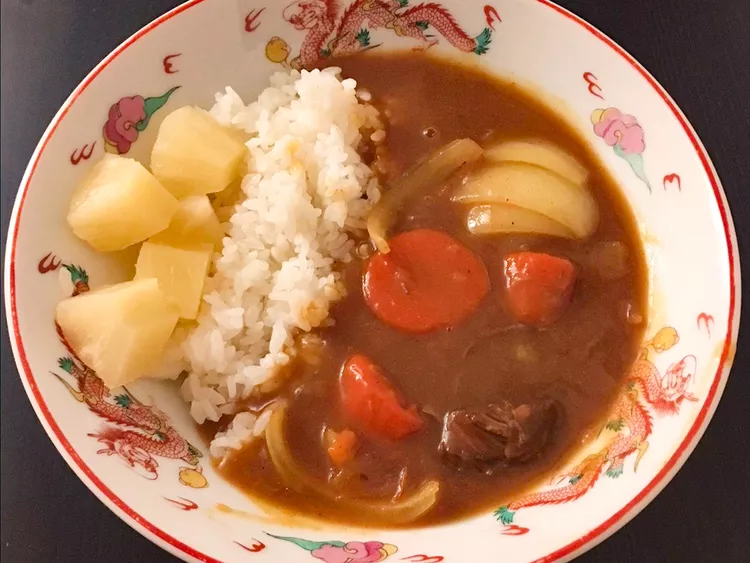

Japanese Curry

Japanese curry, known as 'Kare' in Japan, is a beloved dish that has been warming hearts and bellies across the country for over a century. It's a rich, thick sauce brimming with tender chunks of meat and soft vegetables like onions, carrots, and potatoes. Unlike its Indian counterpart, Japanese curry has a sweeter taste and a milder heat, making it a family-friendly meal that's deeply satisfying. The secret to its distinct flavor lies in the curry roux, a blend of spices and ingredients that can be homemade or bought pre-made for convenience. Whether it's a classic Chicken Katsu Curry topped with a crispy chicken cutlet or a simple yet hearty beef and vegetable curry, each variation offers a comforting taste of Japanese home cooking.
Ingredients
- 1 tablespoon vegetable oil
- 1 and 3/4 pounds of beef chuck, cut into 2 inch cubes
- 3 onions, quartered
- 1 tablespoon of ketchup
- 1 and 1/2 teaspoons worchestire sauce
- water to cover
- 4 carrots, cut into 2 inch pieces
- 1 cube chicken bouillon
- 3 medium potatos, cut into 4 inch cubes
- 1 and 1/2 containers japanese curry roux
Steps
- Caramelize the Onions:
- Thinly slice onions and sauté them in a pot until they turn golden brown (about 20 minutes). Caramelized onions add a unique flavor to Japanese curry.
- Marinate and Pan-Fry meats:
- Use beef and/or chicken
- Marinate with salt for about 30 minutes
- Pan-fry the meats until it's lightly browned
- Cook the curry:
- In the same pot, add the caramelized onions, pan-fried chicken, carrots, potatoes, and water.
- Bring it to a boil, then simmer for 15 minutes
- Serve:
- Enjoy your homemade Japanese curry over steamed rice!
Return Home